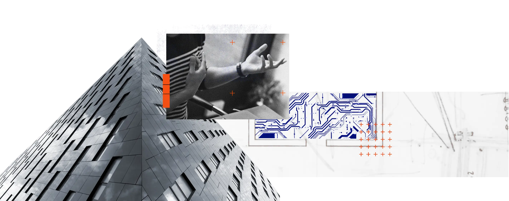

Nine packages. One operating system. Decisions that don’t wait.
A two-layer system — intelligence that gathers, and a loop that turns it into better decisions. So every call is made with more context and less prep, and the function gets smarter each cycle.
“AI is the most important, consequential transition we’ll undertake as comms leaders.”
Nike’s communications function runs on talent and hustle. This system gives it memory, sensing, and a feedback loop.


Nike’s comms runs on talent and hustle. The system underneath works against it.
The team doesn’t lack skill. The system lacks memory, sensing, and a feedback loop.

Four gaps the function lives with today.
Client patterns. And where things get stuck.
- Adoption is up
- No org change
- Lack of clarity on why
- A few advanced players
- Personality-dependent
- Individual vs team oriented
- Strategy & idea driven
- Workflow-centric
- Infrastructure supported
- AI central to comms ops
- Reaches people & agents
- Risks managed upstream
- Intelligence informs decisions
- Scales w/out headcount
- Machine-readable by default

Intelligence that gathers — and a loop that turns it into decisions.

Is your leadership mode fit for purpose?
AI doesn’t change the work — it changes what the work requires of the person leading it. Type A strategies extract from tools. Type G strategies build systems that compound.

AI delivers value in two distinct ways.

The nine packages.


Intelligence without a decision loop is just a bigger pile to read.
The IOS sits above the nine packages. It takes what the intelligence surfaces and routes it into four recursive loops — so every insight lands in a decision, not just a deck.
The IOS turns intelligence into a rhythm.
Meetings start at decisions. AI handles the pre-brief.
Every recurring meeting gets an AI-generated pre-brief. All attendees arrive informed. The room is used entirely for decisions — not status.
- ›Status on narrative health, decisions, competitive moves
- ›All attendees arrive informed — no status catch-up
- ›Meeting begins at decisions, not background
- ›Structured real-time capture of decisions and owners
- ›No “where are we?” — AI handled that before you walked in
- ›Action items assigned with owners immediately
- ›Decisions and actions fed into the relevant loops
- ›Next pre-brief automatically informed by this session
- ›The loop improves with every cycle
Six principles for an AI-informed comms function.
12 months. Five phases.
No waiting for full rollout. Each phase stands alone and feeds the next.
- ·Audit where knowledge lives
- ·Select & implement toolstack
- ·Build Pkg 1: Institutional Memory
- ·Cultural & Trend (Pkg 2)
- ·Competitive Coverage (Pkg 3)
- ·Policy & Regulatory (Pkg 4)
- ·Reporter & Stakeholder (Pkg 5)
- ·First AI meeting pre-briefs
- ·Decision capture live
- ·Scenario & Red Team (Pkg 6)
- ·Exec & Earnings Sim (Pkg 7)
- ·Living Narrative (Pkg 8)
- ·Campaign & Agency Brief (Pkg 9)
- ·First AI-suggested improvements
- ·Recursive loops end to end
This is the Communications Big Bang inside Nike.
Type G strategy: human + AI orchestration, where assets deepen and returns accelerate. Nine packages and four loops — the infrastructure that makes it real.